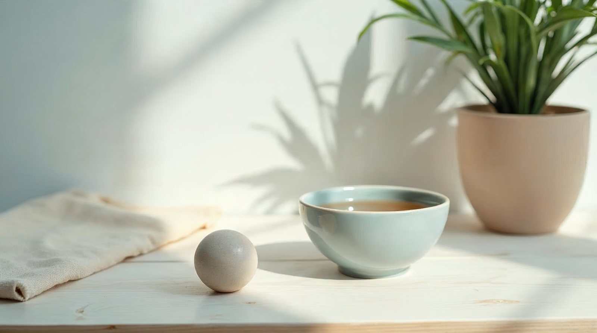
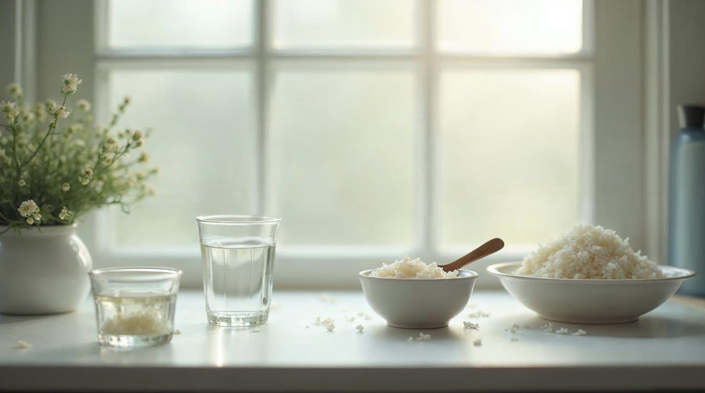
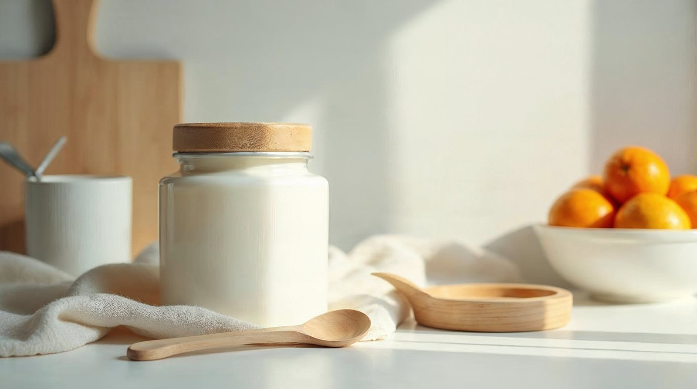
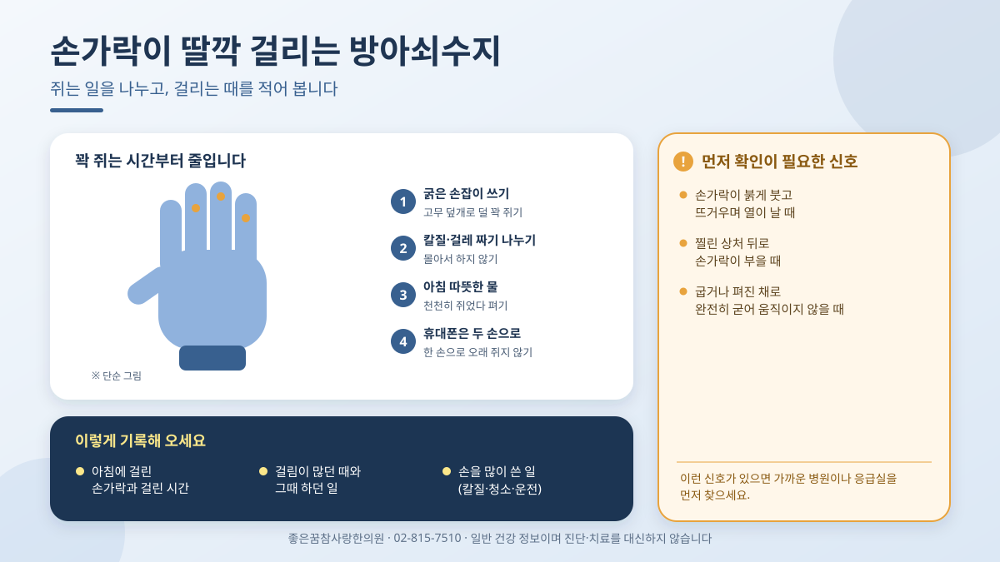

이종호 한의사 감수좋은꿈참사랑한의원 대표원장 (한의사 면허번호 19769)발행 2026-11-26 · 수정 2026-11-26
이 글의 차례
아침에 일어나 주먹을 쥐었다 펴는데 가운뎃손가락 하나만 굽은 채로 멈춥니다. 다른 손으로 살살 펴 주면 '딸깍' 하고 튕기듯 펴집니다. 손바닥 아래쪽을 누르면 콩알 같은 것이 만져지고 시큰합니다. 낮에는 좀 괜찮다가 다음 날 아침이면 또 그렇습니다.
진료실에서 이런 말씀을 자주 듣습니다. "손가락 마디가 고장 난 것 같아요." "관절염이 시작된 건가요?" 손은 하루 종일 쓰는 곳이라, 손가락 하나가 말을 듣지 않으면 생각보다 많은 일이 불편해집니다. 단추를 채우고, 휴대폰을 쥐고, 냄비를 드는 일까지요.
이런 모습을 흔히 방아쇠수지라고 부릅니다. 손가락을 굽히는 힘줄이 손바닥 쪽의 좁은 통로를 지나다가 걸려, 방아쇠를 당기듯 걸렸다 튕기는 모습이라 붙은 이름입니다. 엄지에도, 넷째손가락에도 잘 생깁니다.
관절 자체보다 힘줄과 그 통로의 문제인 경우가 많습니다. 이 글에서는 왜 걸리는지, 비슷한 다른 손 통증과 어떻게 다른지, 일상과 진료실에서 무엇을 살피는지 차근차근 적어 보겠습니다.
왜 손가락이 걸릴까요
손가락을 굽히는 힘줄은 팔뚝 근육에서 시작해 손바닥을 지나 손가락 끝까지 이어집니다. 이 힘줄이 뼈에서 들뜨지 않도록 곳곳에 고리 같은 띠가 붙잡아 줍니다. 손바닥과 손가락이 만나는 자리의 첫 번째 고리가 가장 자주 문제가 됩니다.
손을 많이 쥐고 비틀면 이 고리와 힘줄이 계속 마찰합니다. 마찰이 쌓이면 고리가 두꺼워지고 힘줄 일부도 부어 혹처럼 굵어집니다. 굵어진 힘줄이 좁아진 고리를 지나갈 때 걸리고, 힘을 더 주면 '딸깍' 하고 넘어갑니다.
아침에 더 심한 이유는 밤새 손을 쓰지 않으며 붓기가 고이고, 손가락을 굽힌 채 자는 경우가 많기 때문으로 설명합니다. 낮에 손을 쓰면서 붓기가 조금 빠지면 걸림이 덜해지기도 합니다.
가위질, 칼질, 걸레 짜기, 공구 쥐기, 운전대 꽉 잡기, 휴대폰을 한 손으로 오래 쥐는 습관처럼 손을 꽉 쥐는 일이 많은 분께 잘 생깁니다. 당뇨, 갑상선 질환, 류마티스 관절염이 있는 분에게 더 흔하다고 알려져 있습니다.
한의학에서는 힘줄을 근(筋)이라 하여 간(肝)의 기운과 혈이 길러 준다고 보았습니다. 손을 오래 쓰고 몸이 지쳐 근을 충분히 기르지 못하면 뻣뻣하고 걸리는 모습이 나타난다고 설명해 왔습니다.
겨울에 찬물로 설거지와 빨래를 오래 하면 손이 더 뻣뻣해진다는 분도 많습니다. 찬 기운에 손의 혈액 순환이 줄고 힘줄 주변도 굳기 쉽습니다. 물일을 할 때는 미지근한 물과 고무장갑을 쓰고, 끝난 뒤 손을 잘 말려 따뜻하게 해 주세요.

관절염, 드퀘르벵, 손목터널과는 어떻게 다를까요
손가락 관절염은 마디 자체가 붓고 굵어지며, 여러 손가락에 걸쳐 나타나는 경우가 많습니다. 손가락 끝마디나 가운데 마디가 울퉁불퉁해지면 관절 쪽을 먼저 봅니다. 방아쇠수지는 손바닥과 손가락 경계, 마디 아래쪽이 아프고 걸림이 특징입니다.
엄지 쪽 손목이 아프고 엄지를 주먹 안에 넣고 손목을 새끼손가락 쪽으로 꺾을 때 찌릿하다면 드퀘르벵 건초염을 떠올립니다. 같은 힘줄 문제이지만 자리가 손목이라는 점이 다릅니다.
새벽에 엄지부터 넷째손가락 절반까지 저려 깨고 손을 털면 나아진다면 손목터널증후군 쪽입니다. 걸림보다 저림과 감각 이상이 앞에 섭니다. 방아쇠수지와 손목터널증후군이 함께 있는 분도 적지 않습니다.
아침에 여러 손가락이 한 시간 넘게 뻣뻣하고, 양손 같은 자리가 붓고 따뜻하다면 류마티스 관절염 같은 염증성 질환도 확인해야 합니다. 이럴 때는 류마티스내과 검사가 먼저입니다.
예를 들면 이런 모습입니다
실제 어느 분의 사연이 아니라, 진료실에서 자주 보는 모습을 바탕으로 그려 본 장면입니다.
예를 들어 김장이나 명절 음식 준비로 며칠 동안 칼질과 걸레 짜기를 몰아서 한 뒤 손가락이 걸리기 시작했다는 분이 계십니다. 이럴 때는 손이 쉬는 시간을 먼저 만들고, 그 뒤에도 이어지는지 지켜봅니다.
미용, 요리, 공예, 악기처럼 손을 섬세하게 오래 쓰는 일을 하는 분이라면 일을 쉬기 어렵습니다. 그래서 일을 멈추라는 말보다 쥐는 방식과 쉬는 간격을 바꾸는 쪽을 함께 찾습니다.
출산 뒤 아기를 안고 젖병을 쥐는 시기, 갱년기 무렵 손이 붓고 뻣뻣해지는 시기에 함께 시작되는 경우도 있습니다. 이때는 손가락만이 아니라 잠과 붓기, 몸의 변화를 같이 봅니다.
손가락 하나가 아니라 팔 전체를 봅니다
손가락을 굽히는 힘줄의 근육은 손이 아니라 팔뚝에 있습니다. 그래서 손가락이 걸리는 분의 팔뚝 안쪽을 눌러 보면 단단하게 뭉쳐 있는 경우가 많습니다. 손을 꽉 쥐는 일이 많을수록 팔뚝 근육도 쉬지 못합니다.
팔뚝이 굳어 있으면 힘줄이 늘 당겨진 상태로 통로를 지나게 됩니다. 저는 손바닥만 살피지 않고 손목, 팔뚝, 팔꿈치까지 함께 눌러 보고, 목과 어깨의 긴장도 여쭙습니다. 어깨가 굳어 팔 전체에 힘이 들어가 있는 분도 적지 않습니다.
팔뚝을 푸는 간단한 방법이 있습니다. 팔을 앞으로 뻗어 손바닥이 앞을 보게 하고, 다른 손으로 손가락을 몸 쪽으로 살짝 당겨 15초 정도 둡니다. 팔뚝 안쪽이 당기는 느낌이 들면 충분합니다. 아프면 멈추세요.
일하는 중간중간 손을 털고, 손가락을 쫙 폈다가 가볍게 주먹을 쥐는 동작을 몇 번 해 주시는 것도 좋습니다. 한 시간에 한 번이면 충분합니다. 작은 쉼이 쌓여 손이 견디는 힘이 됩니다.
스스로 살펴보는 질문
아래는 진단표가 아니라 내 손을 진료실에서 설명하기 위한 질문입니다.
- 손가락을 굽혔다 펼 때 걸리거나 딸깍하는 느낌이 있다
- 손바닥과 손가락이 만나는 자리를 누르면 아프거나 작은 혹이 만져진다
- 아침에 일어났을 때 더 뻣뻣하고 잘 걸린다
- 다른 손으로 펴 줘야 펴진 적이 있다
- 손을 꽉 쥐는 일(칼질, 가위질, 공구, 운전)을 자주 한다
- 당뇨, 갑상선 질환, 류마티스 관절염을 진단받은 적이 있다
질문에 답하다 보면 어느 손가락이, 어떤 일 뒤에, 하루 중 언제 더 걸리는지가 보이기 시작합니다. 그 세 가지가 진료실 대화의 출발점이 됩니다.
걸림의 정도는 이렇게 나눠 봅니다
같은 방아쇠수지라도 정도가 다릅니다. 손바닥이 시큰하기만 하고 걸리지는 않는 때가 있고, 가끔 걸리지만 스스로 펴지는 때가 있습니다. 더 지나면 다른 손으로 펴 줘야 펴지고, 마지막에는 아예 굽거나 펴진 채로 굳기도 합니다.
어느 단계인지에 따라 쉬며 지켜볼지, 다른 진료와 함께 갈지가 달라집니다. 그래서 저는 "몇 번 걸리느냐"보다 "스스로 펴지느냐"를 먼저 여쭙습니다.
먼저 이렇게 여쭙니다
손은 하루의 일과 그대로 닮아 있습니다. 처음 오시면 이런 것들을 여쭙니다.
- 어느 손, 어느 손가락이 언제부터 걸리는지
- 걸리는 정도(가끔 걸림, 매번 걸림, 다른 손으로 펴야 함, 아예 굳음)
- 하루에 손을 많이 쓰는 일과 쥐는 도구
- 아침 뻣뻣함이 얼마나 가는지, 다른 손가락·손목도 아픈지
- 당뇨, 갑상선, 류마티스 관련 진단과 드시는 약
- 정형외과에서 받은 주사나 검사, 그 시기
정형외과에서 주사를 맞으셨다면 언제, 몇 번 맞으셨는지 알려 주세요. 같은 자리에 주사를 반복하는 것은 조심스럽게 정하는 일이라 그 이력이 다음 계획에 중요합니다.

일상에서 먼저 해 볼 수 있는 것
방아쇠수지는 손을 쓰는 방식과 깊이 연결되어 있어, 생활에서 손볼 수 있는 것이 꽤 있습니다.
- 꽉 쥐는 동작을 줄이고, 손잡이가 굵은 도구나 고무 덮개를 씁니다
- 칼질·걸레 짜기 같은 일은 몰아서 하지 않고 나눠서 합니다
- 아침에 따뜻한 물에 손을 담그고 천천히 쥐었다 펴기를 몇 번 합니다
- 휴대폰은 한 손으로 오래 쥐기보다 두 손이나 거치대를 씁니다
손가락 스트레칭은 아프지 않은 범위에서 천천히 합니다. 손바닥을 펴고 손가락을 뒤로 살짝 젖혀 10초 정도 두는 것을 몇 번 반복합니다. '딸깍' 하고 튕기는 동작을 일부러 반복해 확인하는 것은 오히려 마찰을 늘릴 수 있어 피하시는 편이 좋습니다.
밤에 손가락을 굽힌 채 주먹을 쥐고 자는 분이라면, 걸리는 손가락을 펴진 상태로 가볍게 받쳐 주는 보조기를 쓰기도 합니다. 보조기는 크기와 착용 시간을 정형외과나 진료실에서 상의한 뒤 쓰세요.
당뇨가 있으신 분은 혈당 관리가 손의 힘줄 건강과도 이어져 있습니다. 손가락만 보지 마시고 당화혈색소 같은 숫자도 함께 챙기시길 권합니다.
한의원에서 함께 살필 수 있는 경우
방아쇠수지는 정도에 따라 쉬고 지켜보거나, 주사나 시술을 받거나, 수술을 상의하기도 합니다. 그 사이에서 한의원이 함께 살필 수 있는 경우는 이렇습니다.
- 걸림이 가끔 있고 아침 뻣뻣함과 손바닥 통증이 주된 경우
- 손을 많이 쓰는 일을 계속해야 해서 습관과 손 관리를 함께 정하고 싶은 경우
- 손이 잘 붓고 차며, 여러 손가락이 함께 뻣뻣한 느낌이 드는 경우
- 정형외과 치료를 받으면서 손목·팔뚝·목·어깨의 긴장을 함께 살피고 싶은 경우
좋은꿈참사랑한의원에 처음 오시면 아래 위험 신호가 있는지 먼저 여쭙고, 손가락이 굳어 펴지지 않는 정도인지 확인합니다. 그런 경우라면 정형외과 진료를 먼저 권해 드립니다.
그다음 양손을 올려 달라고 말씀드립니다. 저는 처음 오신 분이든 다시 오신 분이든 모든 분께 맥을 짚습니다. 맥과 함께 손바닥의 아픈 자리, 손목과 팔뚝의 긴장, 손발의 붓기와 온도를 봅니다.
필요하면 초음파로 힘줄의 굵기와 통로의 모습을 확인합니다. 이렇게 살핀 내용을 바탕으로 침, 체외충격파, 온열 치료, 한약 상담처럼 함께 할 수 있는 것을 정합니다. 결과를 미리 약속드리기보다 다음 진료에서 걸림의 횟수와 아침 뻣뻣함이 어땠는지 함께 보며 조정합니다.

이렇게 기록해 오시면 상담이 쉬워집니다
걸림은 하루 중 언제냐에 따라 크게 다릅니다. 1~2주만 짧게 적어 와 주세요.
- 아침에 걸린 손가락과 펴지기까지 걸린 시간
- 하루 중 걸림이 많았던 때와 그때 하던 일
- 손바닥 통증의 크기(0~10)
- 그날 손을 많이 쓴 일(칼질, 청소, 운전, 휴대폰 사용 시간)
걸리는 순간을 휴대폰으로 짧게 찍어 오시면 설명보다 정확합니다. 진료실에서는 그날따라 잘 걸리지 않는 경우가 많기 때문입니다.
정형외과에서 받은 초음파나 엑스레이 결과, 혈당·갑상선 검사 결과가 있다면 함께 가져와 주세요. 이미 확인된 것을 알면 같은 검사를 되풀이하지 않고 지금 필요한 이야기로 바로 넘어갈 수 있습니다. 빈칸이 있어도 괜찮습니다. 나머지는 제가 여쭙겠습니다.
손가락 하나라도 매일 아침 신경이 쓰이면 하루가 무겁게 시작됩니다. 그동안 손을 쉬지 못하고 버텨 오셨을 테지요. 다음에 오시면 아침에 걸리는 손가락부터 함께 살펴보겠습니다.
이런 증상은 먼저 확인이 필요합니다
- 손가락이 붉게 붓고 뜨거우며 열이 나거나, 찔린 상처 뒤로 붓는 경우
- 손가락이 굽은 채로 또는 펴진 채로 완전히 굳어 움직이지 않는 경우
이런 신호가 있으면 한의원보다 가까운 병원이나 응급실을 먼저 찾으세요.
함께 읽으면 좋은 글
- 손가락을 굽혔다 펼 때 걸리는 느낌이 있으면 초음파로 무엇을 보나요?
- 새벽에 손이 저려 깨는 손목터널증후군은 어떻게 살피나요?
- 한파가 오면 무릎과 손가락 관절이 시리고 뻣뻣한 것은 왜 그런가요?
- 요리나 공예처럼 손을 많이 쓰는 50대의 손가락 마디가 욱신거릴 때는 어떻게 살피나요?

여쭙는 것
- 어느 손, 어느 손가락이 언제부터 걸리는지
- 걸리는 정도(가끔 걸림, 매번 걸림, 다른 손으로 펴야 함, 아예 굳음)
- 하루에 손을 많이 쓰는 일과 쥐는 도구
생활에서 해 볼 것
- 꽉 쥐는 동작을 줄이고, 손잡이가 굵은 도구나 고무 덮개를 씁니다
- 칼질·걸레 짜기 같은 일은 몰아서 하지 않고 나눠서 합니다
- 아침에 따뜻한 물에 손을 담그고 천천히 쥐었다 펴기를 몇 번 합니다
한의원에서 함께 살필 것
- 걸림이 가끔 있고 아침 뻣뻣함과 손바닥 통증이 주된 경우
- 손을 많이 쓰는 일을 계속해야 해서 습관과 손 관리를 함께 정하고 싶은 경우
- 손이 잘 붓고 차며, 여러 손가락이 함께 뻣뻣한 느낌이 드는 경우
먼저 확인이 필요한 신호
- 손가락이 붉게 붓고 뜨거우며 열이 나거나, 찔린 상처 뒤로 붓는 경우
- 손가락이 굽은 채로 또는 펴진 채로 완전히 굳어 움직이지 않는 경우
한눈에 보는 표
| 구분 | 핵심 |
|---|---|
| 여쭙는 것 | 어느 손, 어느 손가락이 언제부터 걸리는지 걸리는 정도(가끔 걸림, 매번 걸림, 다른 손으로 펴야 함, 아예 굳음) |
| 생활에서 해 볼 것 | 꽉 쥐는 동작을 줄이고, 손잡이가 굵은 도구나 고무 덮개를 씁니다 칼질·걸레 짜기 같은 일은 몰아서 하지 않고 나눠서 합니다 |
| 한의원에서 함께 살필 것 | 걸림이 가끔 있고 아침 뻣뻣함과 손바닥 통증이 주된 경우 손을 많이 쓰는 일을 계속해야 해서 습관과 손 관리를 함께 정하고 싶은 경우 |
| 먼저 확인이 필요한 신호 | 손가락이 붉게 붓고 뜨거우며 열이 나거나, 찔린 상처 뒤로 붓는 경우 손가락이 굽은 채로 또는 펴진 채로 완전히 굳어 움직이지 않는 경우 |
자주 묻는 질문
손가락을 일부러 딸깍딸깍 움직여 풀어 주면 괜찮아지나요?
걸리는 동작을 일부러 반복하면 힘줄과 통로의 마찰이 늘 수 있습니다. 아프지 않은 범위에서 천천히 쥐었다 펴는 정도로 하시고, 걸림을 확인하려고 계속 튕기는 것은 피해 주세요.
주사를 맞았는데 다시 걸려요. 또 맞아도 되나요?
같은 자리에 주사를 반복하는 것은 횟수와 간격을 조심스럽게 정하는 일입니다. 주사를 놓은 정형외과와 상의해 주세요. 한의원에 오실 때도 맞은 날짜와 횟수를 알려 주시면 계획을 세우는 데 도움이 됩니다.
수술을 해야 하나요?
정도와 기간, 다른 질환에 따라 달라 한 가지로 말씀드리기 어렵습니다. 손가락이 굳어 펴지지 않거나 오래 이어지면 정형외과에서 수술을 상의하기도 합니다. 지금 어느 단계인지 먼저 확인해 보시길 권합니다.
양손에 다 생길 수도 있나요?
네, 양손이나 여러 손가락에 생기는 분도 있습니다. 여러 손가락이 함께 붓고 아침 뻣뻣함이 길다면 류마티스 관절염 같은 다른 원인도 확인해 보세요.
아이 엄지가 펴지지 않아요. 같은 건가요?
어린아이의 엄지가 굽은 채 펴지지 않는 경우도 방아쇠수지라고 부르지만, 어른과는 생기는 모습과 다루는 방법이 다릅니다. 아이라면 소아청소년과나 소아 정형외과에서 먼저 확인해 보시길 권합니다.
걸리는 손가락에 파스를 붙이거나 찜질을 해도 되나요?
아침 뻣뻣함에는 따뜻한 물에 손을 담그는 것이 편하다는 분이 많습니다. 파스는 피부가 약한 분에게 짓무름이 생길 수 있어 오래 붙여 두지 마세요.
방아쇠수지가 있으면 운동을 쉬어야 하나요?
걷기나 하체 운동은 대개 이어 가셔도 됩니다. 덤벨이나 철봉처럼 손을 꽉 쥐는 운동은 잠시 줄이거나 손잡이가 굵은 도구, 장갑을 써 보세요. 운동 뒤 걸림이 늘면 그 동작부터 바꿉니다.
좋은꿈참사랑한의원은 재진 때 지난번 이야기부터 이어서 여쭙니다. 진료시간과 예약은 오시는 길에서 확인하세요.
어디서 상담받을 수 있나요?
좋은꿈참사랑한의원은 서울 동작구 만양로2길 2 신성빌딩 3층·5층(서울 동작구 상도동, 7호선 상도역 3번 출구 근처)에 있습니다. 한의사 3명(이종호 대표원장, 조영기 수석진료원장, 정원영 진료원장)이 진료합니다. 진료시간은 평일 09:30~20:00(점심 13:00~14:00), 토·일·공휴일 09:30~15:00이며, 방문 전 전화로 확인을 권합니다. 예약은 네이버 예약, 카카오톡 상담, 전화 02-815-7510로 받습니다.
이 글은 일반적인 건강 정보이며 개인의 진단이나 치료를 대신하지 않습니다. 증상이 있거나 복용 중인 약이 있다면 진료를 통해 확인하세요. 치료 효과는 개인마다 다를 수 있습니다.
작성 기준: 일반적으로 알려져 있는 건강 정보를 참고해 정리했습니다(대표원장 감수). 증상 기록은 1~2주 동안 하루 1회, 비슷한 시간에 적어 오시면 지난 상태와 비교하기 쉽습니다.